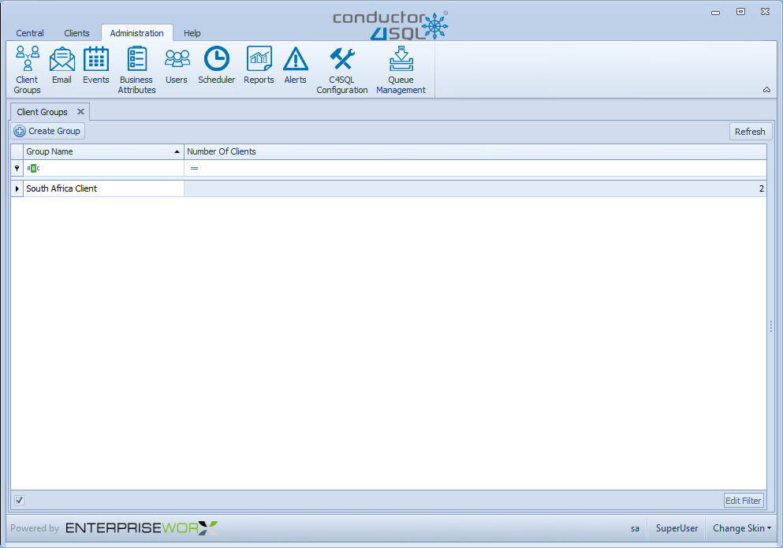

Client Groups Overview
The Conductor4SQL groups feature is used to create meaningful categories of Client Servers which may require similar administration treatment, such as common updates and changes.
The main purpose of Client Groups is the ability to collectively send Commands and Queries to a select group of these pre-defined list of clients.
For example, if your organisation is managing clients that are located in a specific geographical area such as a province, state or country you may want to organise them into a group of pre-defined clients on the Central Server.
Note
You may assign Client Servers to more than one group.
To work with groups select the Client Groups tab from the Central Administration screen
Creating Client Groups
To Create a new group select the Create Group button

Fill in the group Name and Description fields
Tip
Use a descriptive Name and Description

Once complete click on the Save button.
Adding/Removing Clients From a Group
Select a group in the list of groups on the Client Groups tab.
Note
You can edit the details of an existing group by changing the group Name and Description
Add client or Remove clients assigned to a group by using the "available clients" and "selected clients" lists
Tip
In cases where you have large lists of Clients, you should use the search field associated with each list to find the required data. The system uses search-as-you-type technology.
You can also add clients to a group from many other screens. E.g. the Central Client Overview screen
Please view the appendix for more information on how the Selection Control works.
Warning
Whenever you process Commands and Queries against a selected group, only the selected clients assigned to the group will be affected.
Merging Clients from One Group to another
Merging clients is effectively copying all clients from Group A to Group B while group B retains all the clients that is originally had.
Select the client group that you want to copy clients from
Select the merge button.

Select the Client Group that you want to copy to followed by the Ok button.

Deleting a Client Group
You are free to delete groups when they are no longer useful.
Select the client group you want to delete
Select the Delete button.